Transforms
transformerforward-1d,forward-2dreverse-1d,reverse-2d
Collection of 1d and 2d transforms for signal processing, including:
- DFT - Discrete Fourier Transform, real and complex
- DST/DCT - Discrete Sine and Cosine Transforms
- DHT - Discrete Hadamard Transform
- DWT/WPT - Discrete Wavelet Transform and Wavelet Packet Transform
Fast Fourier
(def fft-real (t/transformer :real :fft))(seq (t/forward-1d fft-real [1 2 -10 1])) ;; => (-6.0 -12.0 11.0 -1.0)
(seq (t/reverse-1d fft-real [-6 -12 11 -1])) ;; => (1.0 2.0 -10.0 1.0)(defn magnitudes
[xs]
(-> (->> (t/forward-1d fft-real xs)
(partition 2)
(map v/mag))
(v/div (count xs))
(v/mult 2)))(def sig (map (fn [id]
(let [p (/ id 256.0)]
(+ (m/* 12 (m/sin (* m/TWO_PI p 28)))
(m/* 6 (m/sin (* m/TWO_PI p 29)))
(m/* 8 (m/sin (* m/TWO_PI p 117)))
(m/* 2 (if (> (m/frac (m/* m/PI 50 p)) 0.5) -1.0 1.0))))) (range 256)))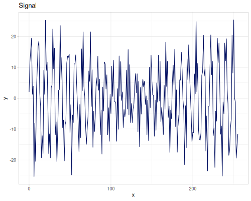 |
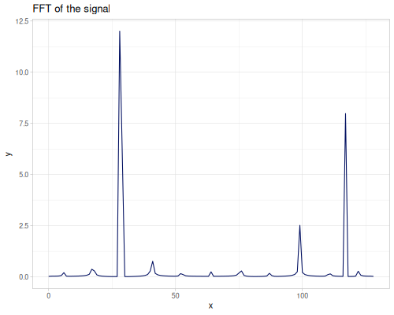 |
Windows
A collection of window functions used in spectral analysis. A fastmath.kernel/window function allows to generate window coefficients for selected window type and optional parameters. Namespace fastmath.kernel.window contains implementations of all window functions.
Most of windows are based on continuous functions which are later sampled to get discrete coefficients.
k/window common options are:
:symmetric?(default:true)true(default) - window coefficients are symmetricfalse- periodic window (last coefficient is skipped)
:normalize?(default:true), for continuous window functionstrue- maximum value is1false- intergral of function is1
(k/window :welch 5) ;; => (0.0 0.75 1.0 0.75 0.0)
(k/window :welch 4 {:symmetric? false}) ;; => (0.0 0.75 1.0 0.75)
(k/window :welch 5 {:normalize? false}) ;; => (0.0 1.125 1.5 1.125 0.0)Each window is illustrated by 4 charts:
- a window function
- FFT of a signal after applying a window
- FFT of a window (padded by zeros for interpolation)
- main- and side-lobes
Rectangular
There are two rectangular windows: :rectangular and :rectangular05. The latter has values 0.5 at both ends.
(k/window :rectangular 8)(1.0 1.0 1.0 1.0 1.0 1.0 1.0 1.0)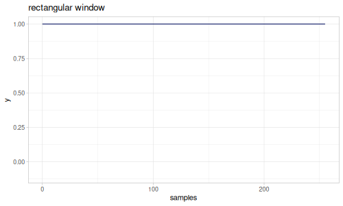 |
|
 |
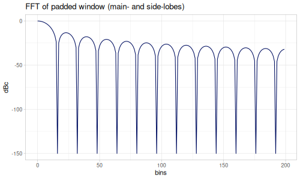 |
(k/window :rectangular05 8)(0.5 1.0 1.0 1.0 1.0 1.0 1.0 0.5) |
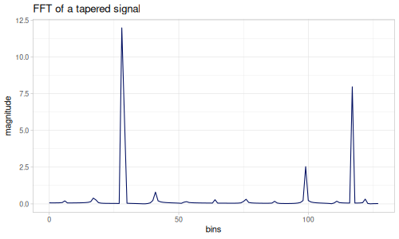 |
 |
 |
Triangular
Triangular window has a :shift parameter, which shifts both ends of the triangle to a non-zero value. By default :shift is set to 2 (which results in the same coefficients as in Scipy).
\[w(n) = 1 - \left|\frac{n - \frac{N}{2}}{\frac{N+shift}{2}}\right|,\quad 0\le n \le N\]
(k/window :triangular 5 {:shift 0})(0.0 0.5 1.0 0.5 0.0)(k/window :triangular 8 {:shift 0})(0.0 0.33333333333333326 0.6666666666666665 0.9999999999999998 1.0 0.6666666666666665 0.3333333333333334 0.0)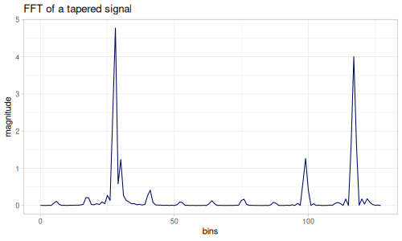 |
|
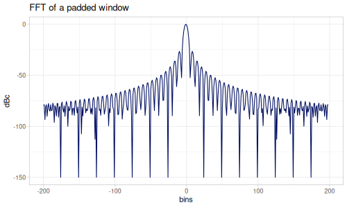 |
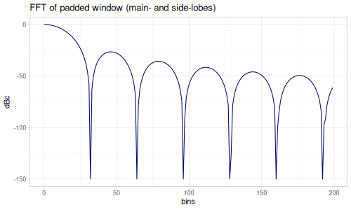 |
(k/window :triangular 5)(0.33333333333333337 0.6666666666666667 1.0 0.6666666666666667 0.33333333333333337)(k/window :triangular 8)(0.125 0.375 0.625 0.875 0.875 0.625 0.375 0.125)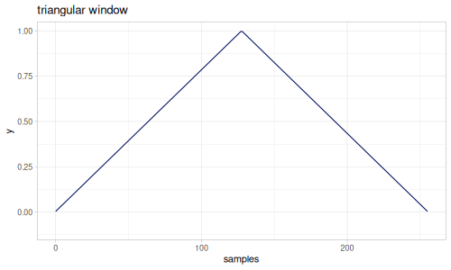 |
|
 |
 |
Parzen
There are two Parzen window definitions, based on continuous function and discrete formulation (wikipedia) when :discrete? option is set to true (default).
Again, the difference is in shifted ends of the window. Continuous version has ends set to 0.0.
(k/window :parzen 5)(0.01599999999999999 0.42399999999999993 1.0 0.42399999999999993 0.01599999999999999)(k/window :parzen 8)(0.00390625 0.10546875 0.47265625 0.91796875 0.91796875 0.47265625 0.10546875 0.00390625) |
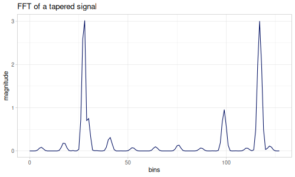 |
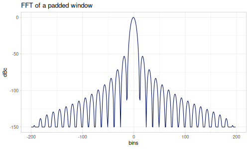 |
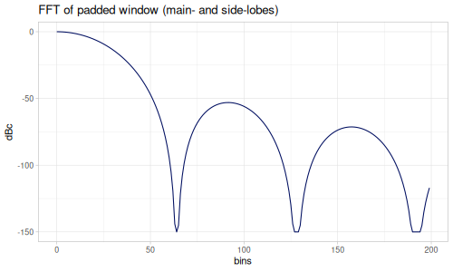 |
(k/window :parzen 5 {:discrete? false})(0.0 0.24999999999999994 1.0 0.24999999999999994 0.0)(k/window :parzen 8 {:discrete? false})(0.0 0.05211726384364774 0.4136807817589575 0.9999999999999999 0.9999999999999999 0.4136807817589575 0.05211726384364848 0.0)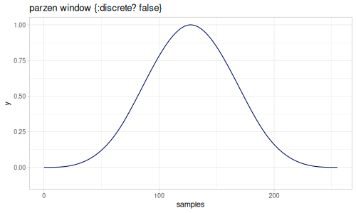 |
|
 |
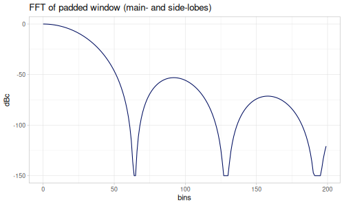 |
B-spline
B-spline family is a generalization of above windows. :order parameter controls number of convolutions of rectangle window.
Order:
1- rectangular window (with the first coefficient set to0.0)2- triangular window4- Parzen window
By default, :order is set to a value of 3.
(k/window :b-spline 5)(0.0 0.375 1.0 0.37500000000000067 4.996003610813204E-16)(k/window :b-spline 8)(0.0 0.13043478260869565 0.5217391304347826 1.0 1.0 0.521739130434783 0.13043478260869673 5.321829933257544E-16)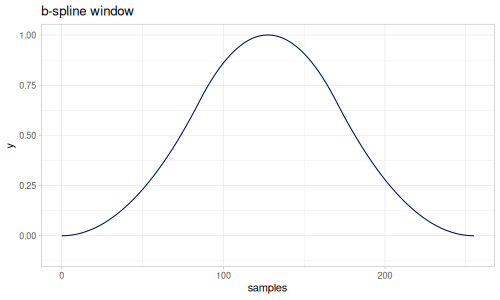 |
|
 |
 |
(k/window :b-spline 5 {:order 5})(0.0 0.1684782608695652 1.0 0.16847826086956086 0.0)(k/window :b-spline 8 {:order 5})(0.0 0.020726247720112726 0.31818935499917056 0.999999999999999 1.0 0.31818935499917483 0.020726247720121188 0.0)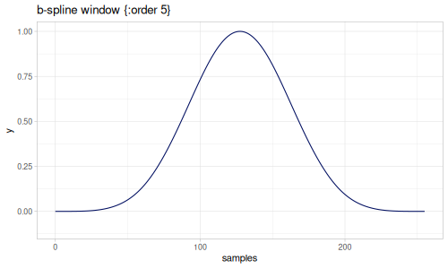 |
|
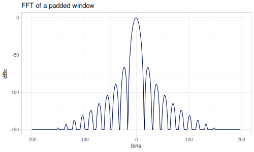 |
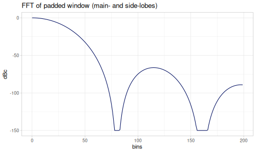 |
Welch
Polynomial window, inverted parabola.
(k/window :welch 5)(0.0 0.75 1.0 0.75 0.0)(k/window :welch 8)(0.0 0.49999999999999994 0.8333333333333334 0.9999999999999999 0.9999999999999999 0.8333333333333334 0.5000000000000001 0.0)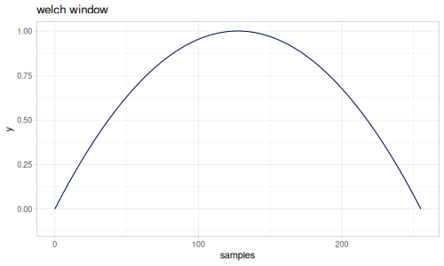 |
|
 |
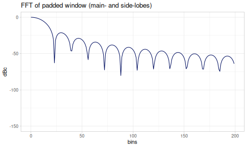 |
Connes
Polynomial family, square of inverted parabola.
(k/window :connes 5)(0.0 0.5625 1.0 0.5625 0.0)(k/window :connes 8)(0.0 0.24999999999999997 0.6944444444444445 0.9999999999999999 0.9999999999999999 0.6944444444444445 0.2500000000000001 0.0)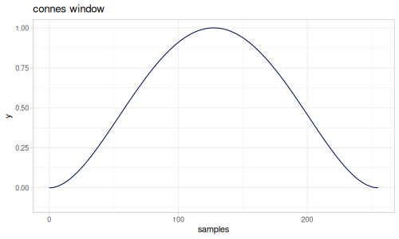 |
|
 |
 |
(k/window :connes 5 {:alpha 1.1})(0.03012089338159966 0.6294652004644492 1.0 0.6294652004644492 0.03012089338159966)(k/window :connes 8 {:alpha 1.1})(0.031163242477516093 0.3460563793275623 0.7443465171289216 1.0 1.0 0.7443465171289216 0.34605637932756234 0.031163242477516093)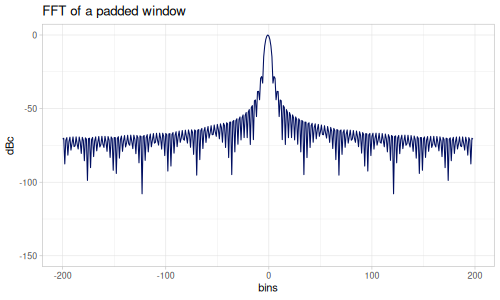 |
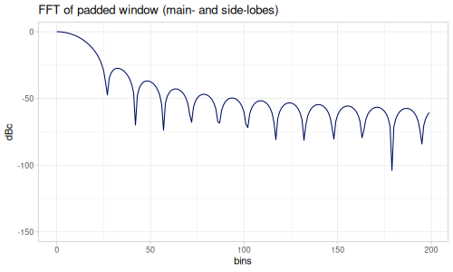 |
Parzen algebraic
Algebraic family
\[w(x)=1-\gamma\left|2x\right|^u\]
Parameters:
:gamma- \(0<\gamma\le 1.0\), default:1.0:u- \(u>0\), default:3.0
(k/window :parzen-algebraic 5)(0.0 0.8749999999999999 1.0 0.8749999999999999 0.0)(k/window :parzen-algebraic 8)(0.0 0.6374269005847951 0.9239766081871343 1.0 1.0 0.9239766081871343 0.6374269005847955 0.0)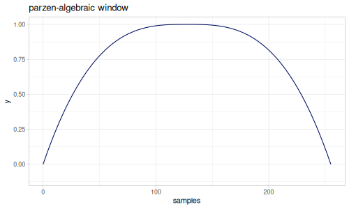 |
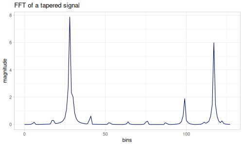 |
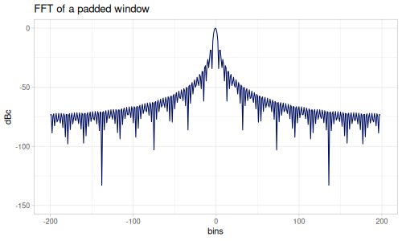 |
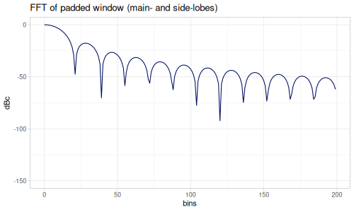 |
(k/window :parzen-algebraic 5 {:gamma 0.9 :u 1.5})(0.09999999999999998 0.6818019484660536 1.0 0.6818019484660536 0.09999999999999998)(k/window :parzen-algebraic 8 {:gamma 0.9 :u 1.5})(0.1051077568776723 0.48001298922585367 0.7856707360315882 1.0 1.0 0.7856707360315882 0.48001298922585384 0.1051077568776723)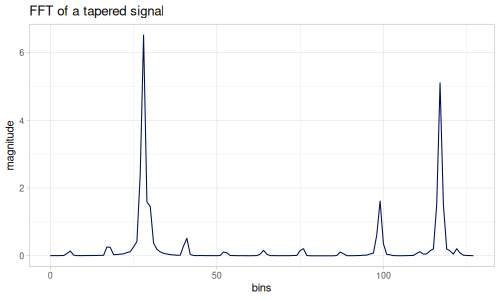 |
|
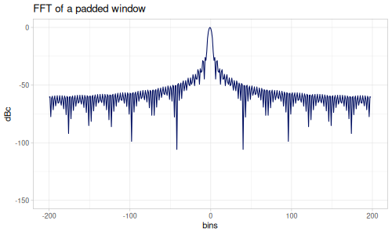 |
 |
Singla and Singh
Family of desired order continuous polynomial time window functions, see paper.
Parameter :order, default 1.
(k/window :singla-singh 5)(0.0 0.5 1.0 0.5 0.0)(k/window :singla-singh 8)(0.0 0.20987654320987648 0.6419753086419753 1.0 1.0 0.6419753086419753 0.20987654320987648 0.0) |
|
 |
 |
(k/window :singla-singh 5 {:order 4})(3.552713678800501E-15 0.49999999999999956 1.0 0.49999999999999956 3.552713678800501E-15)(k/window :singla-singh 8 {:order 4})(3.568879745381315E-15 0.08262794562101408 0.6741387578484836 1.0 1.0 0.6741387578484836 0.08262794562101855 3.568879745381315E-15)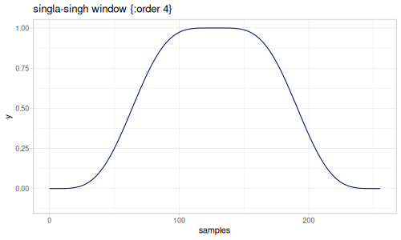 |
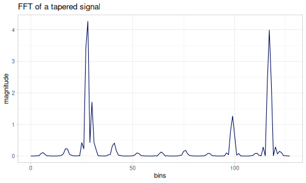 |
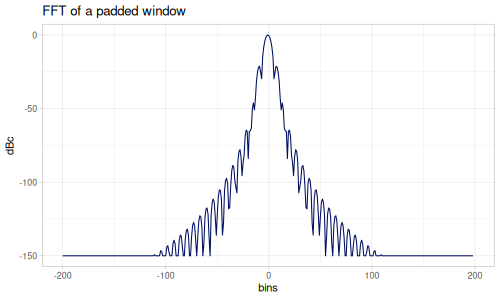 |
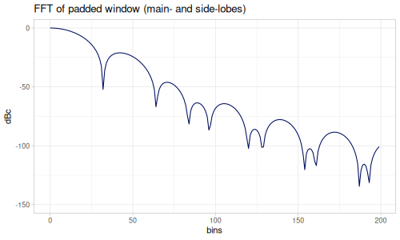 |
Sinc Lobe
(k/window :sinc 5)(3.898171832295186E-17 0.6366197723675815 1.0 0.6366197723675815 3.898171832295186E-17)(k/window :sinc 8)(4.032175602641634E-17 0.36038754716096766 0.7489932012391556 0.9999999999999999 1.0 0.7489932012391556 0.36038754716096777 4.032175602641634E-17)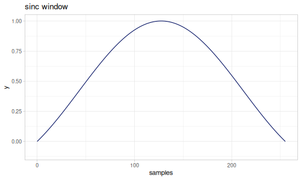 |
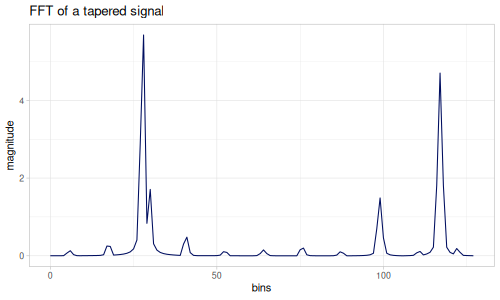 |
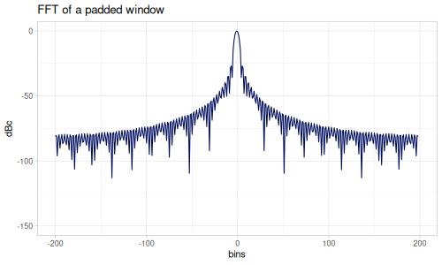 |
 |
Fejer
(k/window :fejer 5)(1.519574363409961E-33 0.40528473456935116 1.0 0.40528473456935116 1.519574363409961E-33)(k/window :fejer 8)(1.6258440090538427E-33 0.1298791841486987 0.5609908155024782 0.9999999999999998 1.0 0.5609908155024782 0.1298791841486988 1.6258440090538427E-33)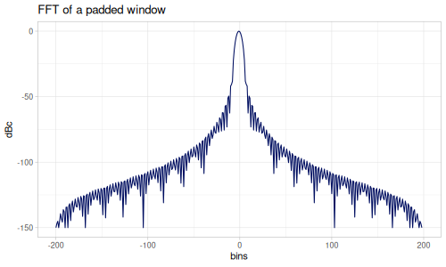 |
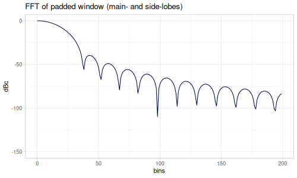 |
de la Vallee Poussin
(k/window :de-la-vallee-poussin 5)(2.3091062459327878E-66 0.16425571607494943 1.0 0.16425571607494943 2.3091062459327878E-66)(k/window :de-la-vallee-poussin 8)(2.6433687417762715E-66 0.016868602475131583 0.3147106950781356 0.9999999999999996 1.0 0.3147106950781356 0.016868602475131615 2.6433687417762715E-66)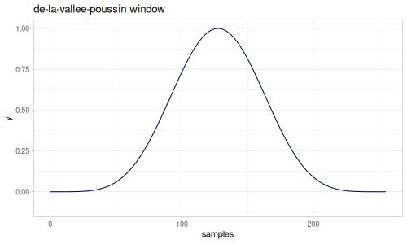 |
|
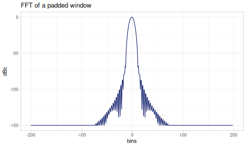 |
 |
Lanczos
Lanczos family, power of sinc function with parameter :L (power, default: 3.0).
(k/window :lanczos 5)(5.923561980522598E-50 0.25801227546559596 1.0 0.25801227546559596 5.923561980522598E-50)(k/window :lanczos 8)(6.555688547007967E-50 0.046806840602617146 0.4201783067689656 0.9999999999999996 1.0 0.4201783067689656 0.046806840602617215 6.555688547007967E-50)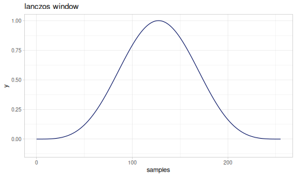 |
|
 |
 |
(k/window :lanczos 5 {:L 5})(9.001292925672074E-83 0.10456843657770835 1.0 0.10456843657770835 9.001292925672074E-83)(k/window :lanczos 8 {:L 5})(1.0658526949375796E-82 0.006079234270046099 0.23571617097077255 0.9999999999999996 1.0 0.23571617097077255 0.006079234270046113 1.0658526949375796E-82)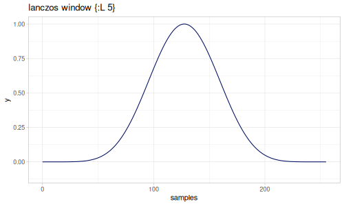 |
|
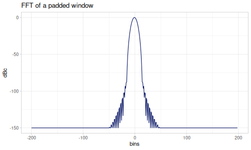 |
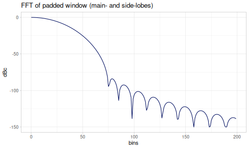 |
Hamming
Two Hamming windows:
:hamming- raised cosine window with rounded alpha, \(\alpha=0.54\):hamming-exact- raised cosine window with \(\alpha=\frac{25}{46}\)
(k/window :hamming 5)(0.08000000000000006 0.54 1.0 0.54 0.08000000000000006)(k/window :hamming 8)(0.08381828504280263 0.26527930992143145 0.6730185316933782 0.9999999999999999 1.0 0.6730185316933782 0.2652793099214316 0.08381828504280263)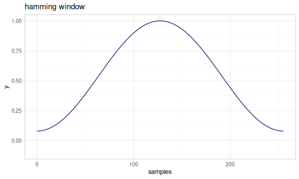 |
 |
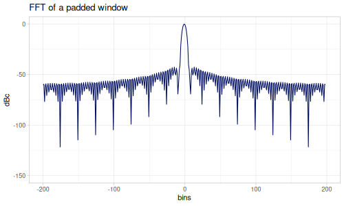 |
 |
(k/window :hamming-exact 5)(0.08695652173913046 0.5434782608695653 1.0 0.5434782608695653 0.08695652173913046)(k/window :hamming-exact 8)(0.0910739632930434 0.2710979121091579 0.6756080532796445 0.9999999999999999 0.9999999999999999 0.6756080532796445 0.2710979121091581 0.0910739632930434) |
|
 |
 |
Hann
Raised cosine window with \(\alpha=0.5\)
(k/window :hann 5)(0.0 0.5 1.0 0.5 0.0)(k/window :hann 8)(0.0 0.19806226419516174 0.6431041321077906 0.9999999999999999 1.0 0.6431041321077906 0.19806226419516199 0.0)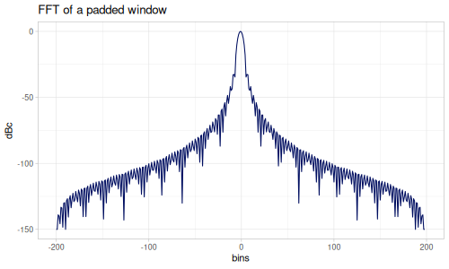 |
 |
Raised Cosine
Raised Cosine family with parameter :alpha, \(1/2\leq\alpha\leq 1\)
For :alpha
0.5- Hann window (default)0.54- Hamming25/46- Hammin exact1- Rectangular
(k/window :raised-cosine 5 {:alpha 0.75})(0.5 0.75 1.0 0.75 0.5)(k/window :raised-cosine 8 {:alpha 0.75})(0.5126931456583029 0.6092102445870413 0.8260821972898975 0.9999999999999999 1.0 0.8260821972898975 0.6092102445870414 0.5126931456583029) |
|
 |
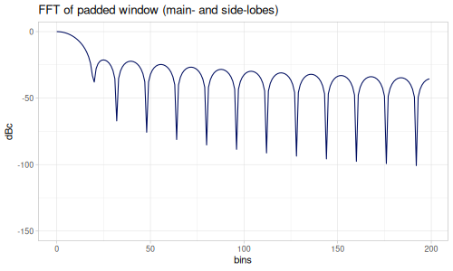 |
Webseter-Hamming
Generalized Hamming window, parameter :v (default: 1.0). \(v\geq 0.0\).
(k/window :webster-hamming 5)(1.1133152718881109E-17 0.4178358252465963 1.0 0.4178358252465963 1.1133152718881109E-17)(k/window :webster-hamming 8)(1.190163008089309E-17 0.155776035585943 0.5699645491830738 0.9999999999999998 1.0 0.5699645491830738 0.15577603558594316 1.190163008089309E-17) |
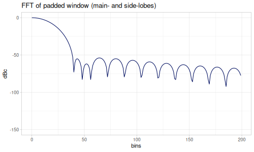 |
(k/window :webster-hamming 5 {:v 0.5})(1.0574472406686653E-9 0.4772655329818381 1.0 0.4772655329818381 1.0574472406686653E-9)(k/window :webster-hamming 8 {:v 0.5})(1.1188729628614304E-9 0.20765991256043373 0.6210280401283461 0.9999999999999998 1.0 0.6210280401283461 0.2076599125604339 1.1188729628614304E-9)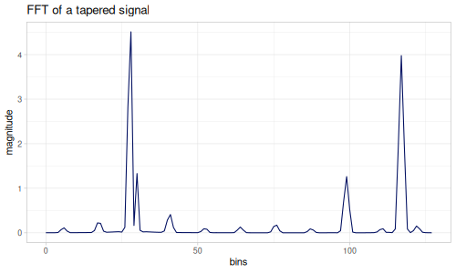 |
|
Power of Cosine
Cosine lobe raised to a power of parameter :m, default 1.0.
For :m:
0.0- Rectangular window1.0- Cosine lobe (default)2.0- Hann window
(k/window :power-of-cosine 5)(6.12323399538461E-17 0.7071067811865476 1.0 0.7071067811865476 6.12323399538461E-17)(k/window :power-of-cosine 8)(6.28070436682977E-17 0.4450418679126289 0.8019377358048383 1.0 1.0 0.8019377358048383 0.4450418679126291 6.28070436682977E-17) |
(k/window :power-of-cosine 5 {:m 4.0})(1.4057996282328156E-65 0.25 1.0 0.25 1.4057996282328156E-65)(k/window :power-of-cosine 8 {:m 4.0})(1.556085322980415E-65 0.03922866049811407 0.41358292473411445 0.9999999999999994 1.0 0.41358292473411445 0.039228660498114146 1.556085322980415E-65) |
|
 |
Raised Power of Cosine
Combinatin of raised cosine and power of cosine windows. Two parameters :alpha (default: 0.05) and :m (power, default 1.0)
(k/window :raised-power-of-cosine 5)(0.050000000000000065 0.7217514421272202 1.0 0.7217514421272202 0.050000000000000065)(k/window :raised-power-of-cosine 8)(0.05121998229954676 0.47346681361513354 0.8120824814711227 0.9999999999999999 1.0 0.8120824814711227 0.47346681361513376 0.05121998229954676) |
 |
(k/window :raised-power-of-cosine 5 {:m 4.0 :alpha 0.1})(0.09999999999999999 0.32500000000000007 1.0 0.32500000000000007 0.09999999999999999)(k/window :raised-power-of-cosine 8 {:m 4.0 :alpha 0.1})(0.10951959747779984 0.1444519508685672 0.4778070867713429 0.9999999999999996 1.0 0.4778070867713429 0.14445195086856727 0.10951959747779984) |
Parzen Cosine
Parzen Cosine family. Parameters :gamma (default: 1.0) and :m (default 2.0)
\[w(x) = 1+\cos(\pi\gamma\left|2x\right|^m)\]
(k/window :parzen-cosine 5)(0.0 0.8535533905932736 1.0 0.8535533905932736 0.0)(k/window :parzen-cosine 8)(0.0 0.4844719109644354 0.9199891606454573 1.0 1.0 0.9199891606454573 0.48447191096443565 0.0) |
|
 |
(k/window :parzen-cosine 5 {:m 4.0 :gamma 0.9})(0.024471741852423238 0.9922132840449459 1.0 0.9922132840449459 0.024471741852423238)(k/window :parzen-cosine 8 {:m 4.0 :gamma 0.9})(0.024471750336516537 0.8705788200234958 0.997727441448911 1.0 1.0 0.997727441448911 0.8705788200234958 0.024471750336516537) |
|
Bohman
Cosine lobe convolved with itself.
(k/window :bohman 5)(3.898171832295186E-17 0.3183098861837907 1.0 0.3183098861837907 3.898171832295186E-17)(k/window :bohman 8)(4.2819712847880185E-17 0.07768804147114684 0.48055705552429945 0.9999999999999998 1.0 0.48055705552429945 0.07768804147114697 4.2819712847880185E-17) |
 |
Trapezoid
Trapezoid window. Combination of Triangular and Rectangular windows.
Parameter :alpha controls flatness of trapezoid (default: 0.25).
For :alpha:
0.0- Triangular window0.5- Rectangular window
(k/window :trapezoid 5)(0.0 1.0 1.0 1.0 0.0)(k/window :trapezoid 8)(0.0 0.5714285714285714 1.0 1.0 1.0 1.0 0.5714285714285716 0.0) |
|
 |
Tukey
Tukey window family, combination of Rectangular and Hann windows.
For :alpha:
0.0- Rectangular window1.0- Hann window
(k/window :tukey 5)(0.0 1.0 1.0 1.0 0.0)(k/window :tukey 8)(0.0 0.6112604669781573 1.0 1.0 1.0 1.0 0.6112604669781576 0.0) |
|
 |
Bartlett-Hann
Combination of Triangular and Hann windows.
(k/window :bartlett-hann 5)(0.0 0.5 1.0 0.5 0.0)(k/window :bartlett-hann 8)(0.0 0.2280457976626262 0.6483268899970085 0.9999999999999998 1.0 0.6483268899970085 0.22804579766262645 0.0) |
 |
Blackman-Harris, Nutall
A collection of Blackman-Harris family, a weighted sum of cosines.
\[w(x)=\sum_{l=0}^{L-1}\alpha_l\cos(2\pi l x)\]
A :blackman-harris-family accepts :coeffs parameter as a list of coefficients.
(k/window :blackman-harris-family 5 {:coeffs [0.4 0.5 0.1]})(2.7755575615628914E-17 0.30000000000000004 1.0 0.30000000000000004 2.7755575615628914E-17)(k/window :blackman-harris-family 8 {:coeffs [0.4 0.5 0.1]})(3.040595927556698E-17 0.07230564159112822 0.46138054727767436 0.9999999999999998 0.9999999999999999 0.46138054727767436 0.07230564159112836 3.040595927556698E-17) |
There is a predefined collection of the following windows from the family:
:blackman:blackman-exact:blackman-harris- three-term, minimum side-lobe:blackman-harris-61db- -61dB, three-term:blackman-harris-67db- -67dB, three-term:blackman-harris-74db- -74dB, four-term:blackman-harris-92db- -92dB, four-term:nutall-3-1st- three-term Nutall, continuous 1st derivative:nutall-3-3rd- three-term Nutall, continuous 3rd derivative:blackman-nutall- four-term, minimum side-lobe:nutall-1st- four-term Nutall, continuous 1st derivative:nutall-3rd- four-term Nutall, continuous 3rd derivative:nutall-5th- four-term Nutall, continuous 5th derivative:mottaghi-kashtiban-shayesteh- four-term
(k/window :blackman 5)(0.0 0.33999999999999997 1.0 0.33999999999999997 0.0)(k/window :blackman 8)(0.0 0.09828009557882057 0.4989147207860599 0.9999999999999996 1.0 0.4989147207860599 0.09828009557882073 0.0) |
|
 |
(k/window :blackman-exact 5)(0.006878761822871904 0.3497420464316424 1.0 0.3497420464316424 0.006878761822871904)(k/window :blackman-exact 8)(0.007461580400017438 0.10835318211028287 0.507487029671614 0.9999999999999998 1.0 0.507487029671614 0.10835318211028298 0.007461580400017438) |
 |
(k/window :blackman-harris 5)(0.005318799999999958 0.34610080000000004 1.0 0.34610080000000004 0.005318799999999958)(k/window :blackman-harris 8)(0.005773304288917651 0.10515268671816382 0.5042160721538894 0.9999999999999998 1.0 0.5042160721538894 0.105152686718164 0.005773304288917651) |
 |
(k/window :blackman-harris-61db 5)(0.012719999999999967 0.39282000000000006 1.0 0.39282000000000006 0.012719999999999967)(k/window :blackman-harris-61db 8)(0.013681247338379686 0.1389399297057468 0.546698374928325 0.9999999999999996 1.0 0.546698374928325 0.138939929705747 0.013681247338379686) |
 |
(k/window :blackman-harris-67db 5)(0.0049000000000000024 0.3440100000000001 1.0 0.3440100000000001 0.0049000000000000024)(k/window :blackman-harris-67db 8)(0.005320882194899602 0.1035775314824974 0.5023027212395945 0.9999999999999999 1.0 0.5023027212395945 0.10357753148249757 0.005320882194899602) |
 |
(k/window :blackman-harris-74db 5)(0.0021799999999999944 0.30325000000000013 1.0 0.30325000000000013 0.0021799999999999944)(k/window :blackman-harris-74db 8)(0.0023901608516235075 0.07889604600183199 0.4632017469397877 0.9999999999999996 1.0 0.4632017469397877 0.07889604600183213 0.0023901608516235075)(k/window :blackman-harris-92db 5)(6.0000000000001025E-5 0.21747000000000005 1.0 0.21747000000000005 6.0000000000001025E-5)(k/window :blackman-harris-92db 8)(6.746350266662481E-5 0.03754537709852358 0.3742352334131323 0.9999999999999996 1.0 0.3742352334131323 0.0375453770985237 6.746350266662481E-5) |
(k/window :nutall-3-1st 5)(0.0 0.31794000000000006 1.0 0.31794000000000006 0.0)(k/window :nutall-3-1st 8)(0.0 0.0840079880762086 0.4782909279014357 1.0 1.0 0.4782909279014357 0.08400798807620874 0.0) |
(k/window :nutall-3-3rd 5)(0.0 0.25 1.0 0.25 0.0)(k/window :nutall-3-3rd 8)(0.0 0.03922866049811408 0.4135829247341146 0.9999999999999998 1.0 0.4135829247341146 0.0392286604981142 0.0) |
 |
(k/window :blackman-nutall 5)(3.628000000000381E-4 0.22698240000000008 1.0 0.22698240000000008 3.628000000000381E-4)(k/window :blackman-nutall 8)(4.067940157254954E-4 0.04235655112932582 0.38428760977713056 1.0 1.0 0.38428760977713056 0.042356551129325945 4.067940157254954E-4) |
(k/window :nutall-1st 5)(0.0 0.211536 1.0 0.211536 0.0)(k/window :nutall-1st 8)(0.0 0.03508532938756397 0.3677403571579412 0.9999999999999998 1.0 0.3677403571579412 0.0350853293875641 0.0)(k/window :nutall-3rd 5)(4.163336342344337E-17 0.17789200000000008 1.0 0.17789200000000008 4.163336342344337E-17)(k/window :nutall-3rd 8)(4.74391799683855E-17 0.021472532451764382 0.3302707906876282 0.9999999999999997 1.0 0.3302707906876282 0.021472532451764493 4.74391799683855E-17) |
|
(k/window :nutall-5th 5)(0.0 0.12500000000000006 1.0 0.12500000000000006 0.0)(k/window :nutall-5th 8)(0.0 0.00776971731959981 0.2659768878657344 0.9999999999999996 1.0 0.2659768878657344 0.007769717319599911 0.0) |
 |
(k/window :mottaghi-kashtiban-shayesteh 5)(0.002599999999999939 0.5013 1.0 0.5013 0.002599999999999939)(k/window :mottaghi-kashtiban-shayesteh 8)(0.03433802426000272 0.23258830978506906 0.653633068852966 1.0 1.0 0.653633068852966 0.23258830978506925 0.03433802426000272) |
 |
Sine / Cosine
Hadamard
Wavelets
waveletwavelet-namecoeff-sizephi,psiscaling-function,wavelet-function
DWT
The Discrete Wavelet Transform (DWT) provides a time–frequency (or time–scale) representation of a signal, analogous to the Short-Time Fourier Transform (STFT). Unlike the STFT, however, the DWT offers multi-resolution analysis, meaning that time and frequency resolutions vary across the spectrum:
- At low frequencies, the DWT provides higher frequency resolution and lower time resolution.
- At high frequencies, it provides higher time resolution and lower frequency resolution.
In the DWT, the signal is successively passed through a pair of filters: a low-pass filter, producing the approximation coefficients, and a high-pass filter, producing the detail coefficients. After filtering, each output is downsampled by a factor of two. The approximation coefficients are then recursively decomposed in the same manner, yielding multiple levels of detail.
The resulting representation consists of detail coefficients at different decomposition levels, each corresponding to a progressively narrower frequency band. At each level, the number of coefficients is halved, while the associated frequency range becomes smaller, collectively capturing both coarse and fine signal structures across scales.
DWT works only on a singal which length is the power of 2.
DWT can be applied to desired level with a {:level n} option. Maximum number of levels can be calculated by applying \(log_2()\) to the length of the signal. For example signal of the length of 8192 will contain 13 levels.
(m/round (m/log2 8192))13Layout of the coefficients after full DWT goes as follows:
- Id 0 - zero frequency term (approximation)
- Id 1 - last level N (detail), lowest time resolution, lowest frequencies, narrowest band
- Ids 2 and 3 - level N-1 (detail)
- ids from 4 to 7 - level N-2 (detail)
- …
- ids from \(2^{N-1}\) to \(2^N-1\) - Level 1 (detail), highest time resolution, highest frequencies, widest band (half of the spectrum)
Let’s see how signal is decomposed into lower and higher frequencies using different wavelets. First define three wavelet transforms:
(def haar (t/transformer :dwt "haar"))(def daubechies-2 (t/transformer :dwt "db2"))(def coiflet-1 (t/transformer :dwt :coiflet-1))(def biorthogonal-39 (t/transformer :dwt "bior3.9"))(seq (t/forward-1d haar (range 8))) ;; => (9.899494936611685 5.656854249492391 2.0000000000000027 2.0000000000000027 0.707106781186548 0.7071067811865481 0.7071067811865479 0.7071067811865479)
(seq (t/forward-1d daubechies-2 (range 8))) ;; => (9.899494936611667 -2.9671278329846853 1.3660254037834763 -4.830127018920185 9.919842725025774E-13 9.940936962493652E-13 9.95759030786303E-13 2.8284271247432224)
(seq (t/forward-1d coiflet-1 (range 8))) ;; => (9.899494936611667 -0.9932994188645519 -3.7797375096555634 2.7797375096555643 8.326672684688674E-17 2.220446049250313E-16 1.3243992251527368 -4.152826349898926)
(seq (t/forward-1d biorthogonal-39 (range 8))) ;; => (9.89949493661166 -9.222771649929241 -1.6303710937500027 1.6303710937500018 0.0 1.1102230246251565E-16 -2.220446049250313E-16 2.828427124746192)First we construct a linear chrip signal with added low frequency square wave to the second half of a chirp.
(defn chirp+sin
[^long levels]
(let [size (m/exp2 levels)
s4 (m// size 4.0)
s2 (m// size 2.0)
square (m/- levels 4)]
(map (fn [^long x] (m/+ (m/sin (m/* m/TWO_PI (m/cb (m// x s4))))
(if (m/> x s2)
(if (m/even? (m/>> x square)) -0.75 0.75)
0.0))) (range size))))(def chirp+sin11 (chirp+sin 11))Length of the signal
(count chirp+sin11)2048
Scaleogram shows time-frequency coefficients (L1, normalized to be comparable) for each level. You can see that first level is most detailed but covers half of the band, while last level contains only one coefficient and represents the lowest frequency. Level 0 (DC) is not shown.
You can see the pattern of orange stripes representing raising frequencies over the time. Also, low frequency is recognized at level 8 (especially when HAAR and BiOrthogonal 3.9 wavelets are used). Dark region at top-left means thare are no higher frequencies at the beginning of the signal.
 |
|
 |
 |
Each level (band) can be reconstructed and analyzed separately. To do this it’s enough to set all other bands to zero value and reverse DWT. Lowest frequencies reveal the shape of the wavelet.
(defn dwt-band
"Return detail band at given level"
[coeffs level]
(let [N (count coeffs)
target (double-array N)
rlevel (int (m/exp2 (m/- (m/round (m/log2 N)) level)))]
(System/arraycopy coeffs rlevel target rlevel rlevel) ;; copy given level
target))Daubechies 2
 |
 |
 |
 |
 |
|
 |
 |
HAAR
 |
 |
|
WPT
Wavelet Packet Transform (or Decomposition) applies filters also on high frequencies (on details). This way the whole band is splitted evenly into 2^N bands at level N. There is no reason to perform full transform. For the best result it’s better to stop early. Let’s see how it works.
(def haar-wpt (t/transformer :wpt :haar))(def coiflet-1-wpt (t/transformer :wpt :coiflet-1))(defn wpt-bands
"Return all bands at given level"
[coeffs level]
(let [N (count coeffs)
cnt (m/round (m/exp2 level))
len (m// N cnt)]
(map (fn [band]
(let [target (double-array N)
pos (m/* band len)]
(System/arraycopy coeffs pos target pos len)
target)) (range cnt))))HAAR WPT at level 2 (4 bands)
 |
 |
 |
Coiflet-1 WPT at level 4 (16 bands)
 |
|||
 |
 |
 |
|
 |
 |
||
 |
 |
Decomposed
List of wavelets
There are two sources of wavelets, one based on JWave and second based on Matlab.
JWave wavelets have some issues with coefficients: some of them are not reversible or have reversed coefficients.
keyword based names are for JWave wavelets, string based are for Matlab (built-in).
Haar
Haar (step, or Daubechies 1, db1) wavelet. :haar-orthogonal is not normalized version of a wavelet.
| Built-in | JWave |
|---|---|
|
|
 |
|
 |
Daubechies
Daubechies, extremal phase, wavelets.
| Built-in | JWave |
|---|---|
|
|
 |
|
 |
|
 |
Symlet
Symlet, least asymmetric, wavelets.
Symlet 2 and 3 are the same as Daubechies. Wavelets starting with la are defined in wavelets R package and are the same as symlets (“sym4”=“la8”, “sym5”=“la10”, etc.).
| Built-in | JWave |
|---|---|
|
|
 |
|
 |
|
 |
Coiflet
Coiflet wavelets.
| Built-in | JWave |
|---|---|
|
|
 |
|
 |
Best-localized Daubechies
| Built-in | JWave |
|---|---|
|
- |
 |
|
 |
Fejér-Korovkin
| Built-in | JWave |
|---|---|
|
- |
 |
|
 |
Morris minimum-bandwidth
| Built-in | JWave |
|---|---|
|
- |
 |
|
 |
 |
Han linear-phase moments
| Built-in | JWave |
|---|---|
|
- |
 |
|
 |
 |
 |
Beylkin
| Built-in | JWave |
|---|---|
|
- |
 |
Discrete Meyer
There is a difference in number of coefficients.
| Built-in | JWave |
|---|---|
|
|
 |
|
 |
Vaidyanathan
| Built-in | JWave |
|---|---|
|
- |
 |
Bi-orthogonal
| Built-in | JWave |
|---|---|
|
|
 |
|
 |
|
 |
Other
All below (but :legendre-1) are not orthogonal (nor bi-orthogonal) and probably are defined with wrong coefficients. Listing them for the reference only.
| Built-in | JWave |
|---|---|
| - | |
 |
|
 |
|
 |
Padding
(def partial-signal (m/sample m/sin 0.25 2.5 20))(defn padding-chart
[signal pad-method]
(let [len (count signal)
start (pad/pad-position :both 90 len)]
(gg/scatters [[(name pad-method) (range) (t/pad signal 90 pad-method)]
["orignal" (range start (+ start len)) signal]]
{:legend-name "Padding" :size 3 :palette [(last gg/palette-blue-0) gg/color-main]
:title (str "Padding: " (name pad-method))}))) |
|
 |
 |
 |
 |
DWT HAAR decomposition for zero and perioding padding (4x original size).
 |
 |
(gg/function2d (fn [[x y]] (m/sin (m/* x (m/cos y)))) {:x [m/-TWO_PI m/TWO_PI]
:y [m/-TWO_PI m/TWO_PI]
:title "sin(x*cos(y))"
:legend-name "value"})
(gg/function m/tan {:x [m/-TWO_PI m/TWO_PI]
:title "tan(x)"
:ylab "y=tan(x)"
:ylim [-2 2] ;; we need to limit y axis
:steps 500})
(let [xs (repeatedly 2000 r/grand)
ys (map (fn [x] (+ (r/grand (+ 0.1 (* x 0.5))) (m/sin (* 2 x)))) xs)]
(gg/scatter xs ys {:title "Scatter"}))
(let [xy (take 1000 (r/sequence-generator :r2 2))]
(gg/scatter xy nil {:title "R2 low-discrepancy sequence generator"}))
(gg/functions [["tan" m/tan]
["cot" m/cot]
["sin" m/sin]
["cos" m/cos]]
{:x [m/-TWO_PI m/TWO_PI]
:title "Basic trigonometric functions"
:ylim [-2 2]
:steps 500
:palette gg/palette-blue-1})
FFT
Details about FFT and use-cases
Some examples:
Wavelets
Compression and denoising
An use case with charts
(def domain (m/slice-range 0 10 512))(def signal (map (fn [x] (+ (Math/sin x)
(* 0.1 (- (rand) 0.5)))) ;; add some noise
domain))(def denoised-signal (t/denoise fft-real signal {:method :hard}))Reference
fastmath.transform
Transforms.
See transformer and TransformProto for details.
### Wavelet
Based on JWave library.
Be aware that some of the wavelet types doesn’t work properly. :battle-23, :cdf-53, :cdf-97.
### Cos/Sin/Hadamard
Orthogonal or standard fast sine/cosine/hadamard 1d transforms.
### Fourier
DFT, FFT, DHT.
->complex
(->complex complex-signal)
Convert transformed signal to complex numbers.
compress
(compress trans xs mag)(compress xs mag)
Compress transformed signal xs with given magnitude mag.
compress-peaks-average
(compress-peaks-average trans xs)(compress-peaks-average xs)
Compress transformed signal xs with peaks average as a magnitude
denoise
(denoise xs {:keys [method threshold skip], :or {method :hard, threshold :universal, skip 0}})(denoise trans xs method)(denoise xs)
Wavelet shrinkage with some threshold.
Methods can be: * :hard (default)
* :soft * :garrote * :hyperbole
:threshold can be a number of one of the denoise-threshold methods (default: :visu)
:skip can be used to leave :skip number of coefficients unaffected (default: 0)
Use on transformed sequences or call with transformer object.
denoise-threshold
(denoise-threshold xs threshold)
Calculate optimal denoise threshold.
threshold is one of the following
:visu- based on median absolute deviation estimate (default):universal- based on standard deviation estimate:sureor:rigrsure- based on SURE estimator:hybridor:heursure- hybrid SURE estimator
fft
(fft xs)(fft xs {:keys [spectrum], :or {spectrum :single-sided}})
Compute the Fast Fourier Transform of a 1D signal.
This function converts a time-domain signal into its frequency-domain representation. It automatically detects the input type: real-valued signals (sequence of numbers) are processed using an efficient Real FFT, while complex-valued signals (sequence of Complex numbers, see fastmath.complex) use a Complex FFT.
For real signals, it defaults to a single-sided spectrum, exploiting Hermitian symmetry to save memory and computation.
Input parameters: * xs - Input signal as a sequence of doubles (real) or a sequence of complex objects (Vec2 type). * options - A map of configuration options: * :spectrum - Determines the output format for real-valued inputs. Options are :single-sided (default), which returns (N/2)+1 coefficients, or :double-sided, which returns the full N length complex spectrum.
Returns a sequence of fastmath.vector.Vec2 representing complex coefficients in the frequency domain. The result includes metadata (e.g., :kind, :even?) required by ifft to correctly perform the inverse transform.
These are:
:kind- can be:realor:complex:even?-true, when signal length was even:real?-truewhen complex fft was performed
Returned sequence contains Nyquist frequency coefficient for real and even signals.
fft-magnitudes
(fft-magnitudes freq-domain)
fft-phases
(fft-phases freq-domain)
forward-1d
(forward-1d t xs)(forward-1d t xs options)
Forward transform of sequence or array.
forward-2d
(forward-2d t xss)
Forward transform of sequence or array.
ifft
(ifft xs)(ifft xs {:keys [kind real? even?], :or {kind :real, real? true, even? true}})
Compute the Inverse Fast Fourier Transform (IFFT).
Converts a frequency-domain signal (spectrum) back into its original time-domain representation. This function is the inverse operation of fft and automatically handles the reconstruction logic based on the type of the input spectrum. It utilizes metadata (such as signal symmetry and original length parity) attached to the input sequence by fft to ensure the resulting signal is restored with the correct dimensions and data type.
Input parameters: * xs - A sequence of complex coefficients, typically as fastmath.vector.Vec2 objects. * options - An optional map of configuration keys (usually inferred from xs metadata): * :kind - The type of transform to perform: :real (default) or :complex. * :even? - For :real transforms, indicates if the original time-domain signal had an even length (crucial for correctly placing the Nyquist frequency). * :real? - For :complex transforms, indicates if the output should be narrowed to real numbers (doubles).
Output: Returns a sequence representing the time-domain signal. For :real kind, it returns a sequence of doubles. For :complex kind, it returns a sequence of Vec2 (complex numbers) unless :real? is set to true.
pad
(pad signal)(pad signal N)(pad signal N pad-method)(pad signal N pad-method side)
Pad signal.
reverse-1d
(reverse-1d t xs)(reverse-1d t xs options)
Forward transform of sequence or array.
reverse-2d
(reverse-2d t xss)
Forward transform of sequence or array.
transformer
Create transform object for given wavelet.
#### Wavelets
:dwtor:fastfor 1d or 2d Fast Wavelet Transform. Size of data should be power of2.:wptor:packetfor 1d or 2d Wavelet Packet Transform. Size of data should be power of2.:decomposed-fastfor 1d Fast Wavelet Transform. Data can have any size (Ancient Egyptian Decomposition is used).:decomposed-packetfor 1d Wavelet Packet Transform. Data can have any size (Ancient Egyptian Decomposition is used).
Second argument is wavelet name as key. See wavelets-list for all supported names.
#### Sine/Cosine/Hadamard
:standardfor 1d:sine,:cosine,:hadamard.:orthogonalfor 1d:sine,:cosine.
Note that :sine and :cosine require first element to be equal 0. Size of data should be power of 2.
#### Fourier
:standard:dft- 1d Discrete Fourier Transform - returns double-array where even elements are real part, odd elements are imaginary part.
source: clay/transform.clj